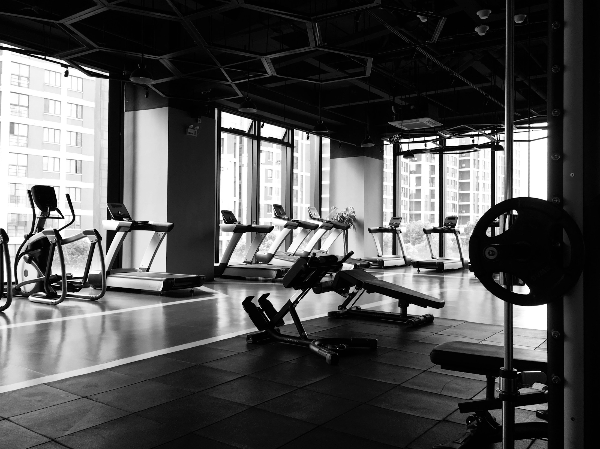
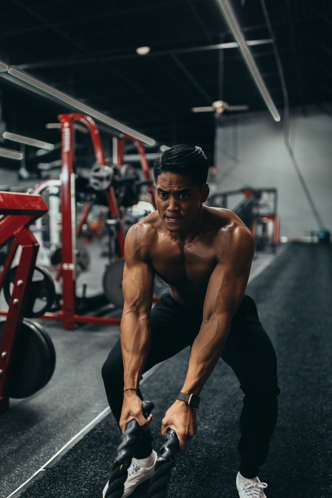
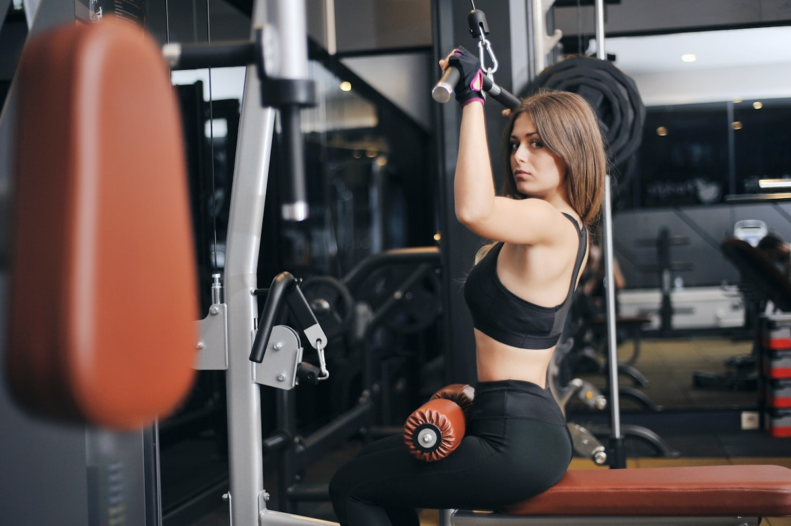

OYO FITNESS CENTER · OYO, RÉPUBLIQUE DU CONGO
VOTRE FORCE
COMMENCE ICI.
Rejoignez Oyo Fitness Center et donnez une nouvelle énergie à votre corps.

01 / IDENTITÉ
UNE DISCIPLINE.
UNE ÉNERGIE.
Oyo Fitness Center accompagne les débutants et les sportifs dans leurs objectifs de remise en forme, de musculation et d'amélioration de leur condition physique.
150+ MEMBRES02 / LES CHIFFRES
03 / SERVICES
CHOISIS TON
TERRAIN.
MUSCULATION
Espace équipé pour les exercices de renforcement musculaire et de développement de la force.
10 000 FCFA / MOISFITNESS
Séances destinées à améliorer la condition physique, l'endurance et la mobilité.
8 000 FCFA / MOISCARDIO
Espace cardio avec équipements destinés à améliorer l'endurance et la condition cardiovasculaire.
INCLUS DANS L'ABONNEMENT MENSUEL04 / COACHING
DES COACHS.
UN CAP.

Patrick MABIALA
Coach principal · Spécialiste en musculation et remise en forme.

Grâce OKO
Coach Fitness · Spécialiste en fitness et entraînement cardio.
05 / TARIFS
CHOISIS TON
PASS.
06 / GALERIE
ENTRE.
REGARDE.
07 / L'EXPÉRIENCE
PLUS QU'UNE SALLE.
UNE ÉNERGIE.
Chaque séance commence par une décision : avancer.
08 / HORAIRES
À QUEL
MOMENT ?
09 / CONTACT
PRÊT À
BOUGER ?
TÉLÉPHONE
+242 06 742 18 35
E-MAIL
contact@oyofitness.cg
ADRESSE
12, Avenue de la Paix, Quartier Centre, Oyo, République du Congo.